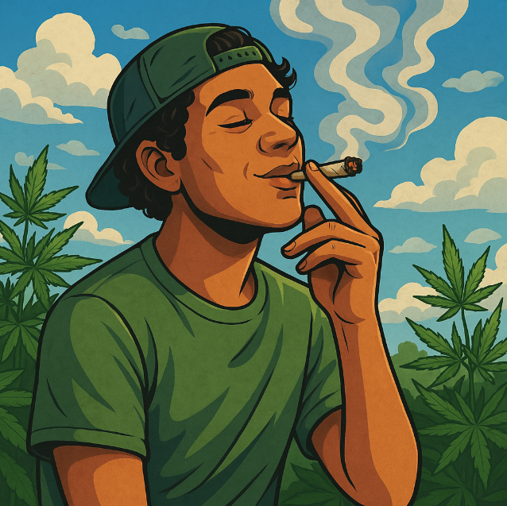

🎉 Uso Recreativo da Cannabis
O uso recreativo da cannabis refere-se ao consumo com fins não medicinais, geralmente para relaxamento, socialização ou prazer pessoal. É uma prática milenar presente em diversas culturas ao redor do mundo, e sua aceitação tem crescido com os avanços na legalização e na compreensão dos seus efeitos.
🌬️ Efeitos comuns
A cannabis pode produzir efeitos variados, dependendo da dose, da variedade consumida e da sensibilidade individual. Entre os efeitos recreativos mais comuns, destacam-se:
- 😄 Sensação de euforia ou bem-estar
- 🎨 Estímulo à criatividade e introspecção
- 😂 Riso fácil e aumento do humor
- 🎧 Intensificação de estímulos sensoriais (som, cor, gosto)
- 😌 Relaxamento físico e mental
⚠️ Possíveis riscos
Apesar dos benefícios recreativos, é importante estar atento a possíveis riscos, especialmente em casos de uso excessivo:
- 🌀 Alterações na percepção do tempo e espaço
- 😰 Ansiedade, paranoia ou pânico em doses elevadas
- 🧠 Dificuldade de memória e concentração temporária
- 🚫 Redução da coordenação motora
- 🧪 Possível dependência psicológica em casos de uso crônico
🌍 Cultura e legalização
Em muitos países, o uso recreativo é legalizado ou descriminalizado, como:
- 🇺🇸 Estados Unidos (em diversos estados)
- 🇨🇦 Canadá
- 🇺🇾 Uruguai
- 🇳🇱 Holanda (em cafés autorizados)
🚬 Formas de consumo
Existem várias formas de consumir cannabis recreativamente:
- 🚬 Fumo (em cigarros, "baseados" ou cachimbos)
- 🌫️ Vaporização (menos nociva ao pulmão)
- 🍪 Comestíveis (bolos, doces, bebidas, etc.)
- 💧 Óleos (embora mais usados no medicinal, também têm uso recreativo)
👥 Curiosidades sobre o uso recreativo
- 🎶 A cannabis influenciou diversos gêneros musicais, como o reggae, o rap e o rock psicodélico.
- 📅 O dia 20 de abril (4/20) é celebrado mundialmente como o “dia da maconha”.
- 🍁 Algumas strains (variedades) são cultivadas especificamente para fins recreativos, com alto teor de THC.
- 📖 Muitos usuários relatam experiências filosóficas ou criativas após o uso recreativo.